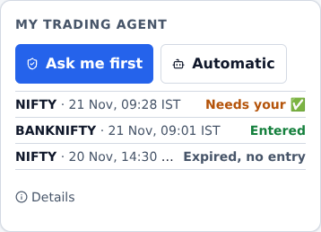
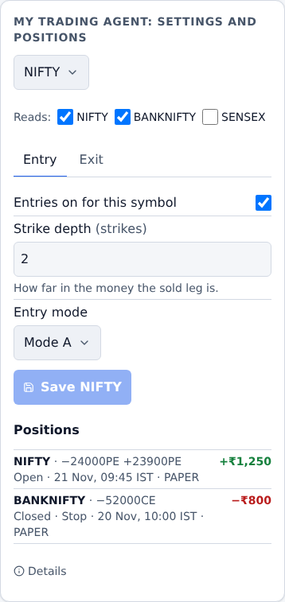
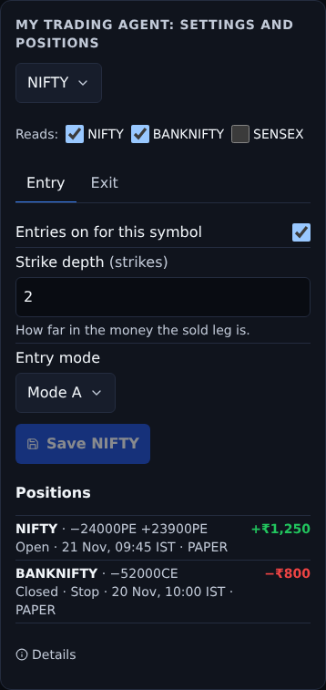
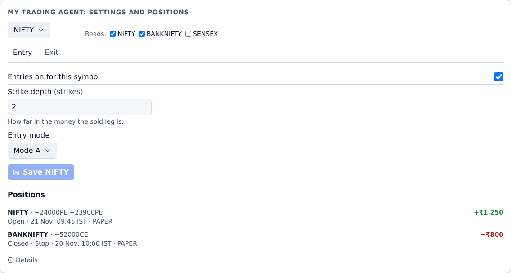
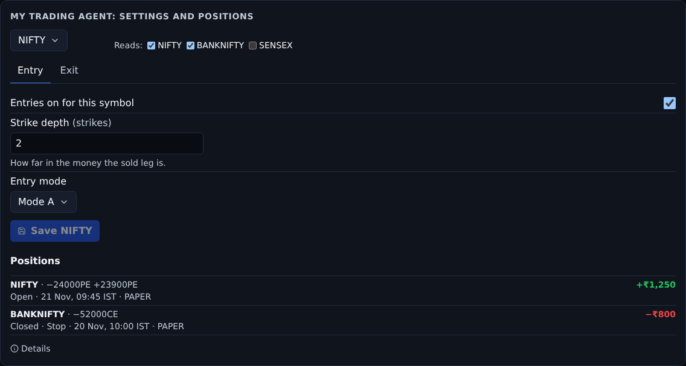

Before: only the agent mode card; settings and positions were not in ATP. After: one card under it. The field names in these shots are made-up test data; the real list comes from the bot (the private package).




